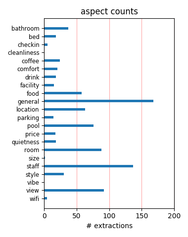
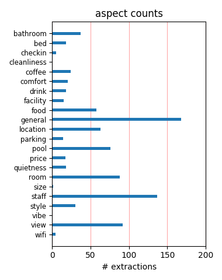

This is a lovely hotel, upmarket and stylish, with attention to detail. Attractive gardens with orchids and two pools. Top quality room. Didn't see a better looking hotel in Key West. Great location, central but quiet. Really enjoyed our stay.
Love this hotel. It's perfect. Key West charm with very good style. Perfect location. In a quiet, beautiful neighborhood, but only 2 blocks from Duval. Beautiful pool area. Excellent service and very nice staff. Have stayed in all types of rooms, and they are all good.
The staff was truly committed to ensuring that our accomodations and our trip in general was perfect. The hotel is lovely and centrally located and no kids under 16. The restaurant had excellent food and an efficiant, pleasant wait staff. I would definitely stay there again.
Perfect location not far from Duval. The grounds are beautiful with most of the rooms enjoying a porch and lovely view of the pools and lush foliage. Our room was elegant, clean and well appointed. The staff was very helpful. Parking is easy as the property has a garage for guest use. Loved it!
My husband and I stayed here the last week in September as a last minute get away. The staff and accommodations were perfect. The pools were lovely and the restaurant was wonderful. Located close to all the action and local businesses work in tandem with the hotel to make everything as convenient as possible.
We never expected such a lovely property--wonderful service, lovely pool and garden, staff that went out of their way to be helpful. Only problem is getting to Key West--it is a LONG drive from mainland Florida. But once you are at the hotel, you don't need your car at all. Would love to go back for a longer stay.
Great experience from start to finish. Wonderful historic buildings, great staff, outstanding pools and gardens. This is exactly what we were looking for when we booked our "Adult" vacation and left the children home. The Marquesa delivered on all accounts. We'll definitely stay at the Marquesa again on return trips to Key West.
The hotel is located in a perfect area of Key West. Shopping and restaurants are walking distance from the hotel. The hotel restaurant was fabulous and the staff at the hotel were very attentive and took time to tell you about Key West. The hotel was immaculate with turn down service every night. We will definitely come back again!
My husband and I enjoyed our 3 night stay from 10/10/2011 celebrating our 48th anniversary. This is the third time we've been guests at the Marquesa Hotel. Our accommodations were excellent. No compalints from hubby or me! Everything was to our satisfaction. The staff made our stay a special one. We'll be back for another visit for sure!
The Marquesa is a beautiful hotel that is exquisitely decorated. The restaurant is fantastic as was the service. The courtyard and pool area were a total escape from the Duval Street madness. A negative is the lack of an elevator, so if that is a concern keep that in mind when booking rooms. Overall a positive experience. We would go back.
Just returned from our second stay at the Marquesa Everything was fine as usual,it really is an oasis of calm in Key West It's 2 blocks from Duval Street but could be 2 miles as it's so quiet. The staff keep it in perfect condition and for Shaun nothing is to much trouble. We will return as soon as possible keep doing what your doing please
We visit Key West often but have been staying at different places. We have now settled in to our favorite! Close to Duval but peaceful and secluded when you want it. The service was great, clean rooms,beautiful gardens and pool, helpful staff, and great bed. Walk every place in old town made easy. Take my word and enjoy the Conch Republic in style.
The Marquesa is a very nice, small hotel convenient to downtown but far enough away to avoid the noise and crowds. We stayed in room #1, which is a junior suite. Large, comfortable room with sitting area. Private and quiet. Landscaping on the property is very nice and pools, while small, are very nice as well. Great getaway, especially for a special occasion.
I work in the hospitality business and the entire staff at the Marquesa achieved the highest level of customer service in the 2 days we stayed that we encourage our team to accomplish with each of our guest each and every day. Friendly, prompt, courteous, and extremely helpful- completely defines excellent customer service. I highly recommend and will return very soon.
With so many already positive reviews, I just have to ad that they go out of the way for special requests! This is a great model for anyone in the hospitality business. I have worked for the Disney Co, and they do a top job, I have seen pretty bad places to great places, and this is one of the ones I rate other by. Even I , and I am tough to please enjoy this property!
From the moment we checked in, everything was perfect. We had a junior suite in newer building. Large and quiet with a mostly private lanai. Grounds are beautiful, employees very helpful, all details attended to. 2 pools. "Nothing to complain about " which is what we said when we checked out- can't always say that. Would stay there again without a doubt. A 5 star hotel.
Great place! Staff was awesome, rooms were perfect, overall great stay. We had junior suite #24 and it was fabulous. Pools were nice and they keep ice tea and towels out at the pool. The Cafe Marquesa next door was delicious! Every dish the table ordered was perfect and the service excellent. Could not say enough nice things about Marquesa. Book a room here with confidence.
This hotel is absolutely wonderful. It is within two blocks of Duval Street yet quiet and relaxing. The staff are very accommodating, the rooms are very well maintained, and the grounds are beautiful. We were upgraded to a suite, but all the rooms seemed quite nice. We walked everywhere as the location was so good. We would definitely recommend this to anyone traveling to Key West!
I would recommand this small hotel to everybody I know. It was super! Nice, clean rooms, very very nice staff (Richard), a wonderfull restaurant, well, everthing was just perfect! What I liked most was the intimacy, it's a small hotel, and the staff is really helpfull and knows you by name. One small thing which could be better is the breakfast. But still I would certainly come back!
Beautiful, quiet, perfect location. We especially enjoyed the lovely center courtyard with tropical vegetation and two pools and the friendly, gracious staff are exceptional. We needed to leave by 5:30 AM on our last day for a departing flight and the person on night duty took note and had coffee ready for us even though coffee service normally begins at 6:30 AM. We look forward to returning.
A wonderful place to spend a birthday. This is our second time visiting the area. Service was excellent, staff was helpful and location perfect. We tried biking this year and found it a lovely way to see the island. We suggest you choose a room overlooking the pools and gardens so it is quiet and picturesque. We would highly recommend the restaurant attached to this hotel. The location is perfect.
Just returned from three nights in paradise at the Marquesa. This was our third visit and the place is just like going to heaven but you do not have to die for the honor. Beautiful room, great garden and two wonderful pools, attentive and friendly staff who take care of all your needs with a smile. One of the best places you could ever stay. The term "first rate" is an understatement when applied here.
We have been to the Marquesa at least 4 times over maybe a 6/7 year period or so. It is always a great spot but most important-it has maintained it's feel. There has been no drop off in appearance or staff support. I find it rare that a hotel that invested so much capital and tender loving care at the beginning can carry that feeling thru the years without a drop off in ongoing investment or staff attitudes.
We just returned from an incredible stay at the marquesa. We stayed in room 18, a beautiful suite with a patio overlooking the pool. We just love the feel of this hotel, you really feel like you are staying at a friend's house. The staff was very attentive but inconspicuous. I swear the housekeeping staff watched us leave because if we were gone, we came back to a full ice bucket and a tidy room. Can't wait to return next year!
This was our second stay at the Marquesa Hotel. We love the accomodations, privacy, quiet pool area and the staff is very nice and accomodating. We brought another couple this year and they enjoyed it as well. The location is perfect for walking the duval and harbor street areas. Talk about being pampered! I love having the bed turned down and chocolate at my bedside! Who wouldn't! Can't wait to return next year. wisconsintravelers
This is the BEST Hotel in Key West hands down. Just a block off Duval Street you step into this cozy, charming, quiet retreat that is a true experience of totally relaxation! The staff was wonderful, kind, attentive and very professional. Our past trips to Key West we have stayed at the La Concha and the Pier House, both of those hotels don't even compare to the Marquesa. This will be the only hotel we stay at when we travel to Key West.
Four of us moms stayed at the Marquesa for a long over-due girl's weekend getaway. The staff was friendly and very helpful. The hotel is beautiful with two pools to choose from - and ice tea and water by the pool. It is in a great location within walking distance to Duval and other Old Town attractions. The hotel was quite and relaxing. Our room overlooked Simonton Street with a wonderful private balcony. The beds were also very comfortable.
We've been coming to Key West for 6-years. We have stayed at the Marquesa for the last four. This is the best place to stay in Key West. Excellent quality, beautiful rooms, lush landscaping, walking distance to everything (we never rent a car, only bikes). We took our adult daughter with us this year and had a very nice time. Room 20 gets nice morning sunshine on the porch. ... great for a morning cup of coffee in the tropical breeze. You gotta try this place!
We have stayed at The Marquesa for the last three years. The hotel is a beautiful, peaceful place to stay in Key West. The location is perfect for walking and biking. The Cafe Marquesa is a very nice spot for cocktails and dinner. It is an oasis with breath-taking waterfalls and landscaping with two pools. The entire staff's friendliness and helpfulness will make your stay very pleasant. We love a lot of things about Key West, but a stay here makes it even better.
This is our third stay at the Marquesa and the third time we loved it! Friendly staff from reservations--they worked hard to accommodate our date change and room preference--to keeping the grounds beautiful to reserving bikes and tours for us. The location is ideal. We enjoy being close to the grocery store and can walk to the movie theater and restaurants. But really, our favorite activity is sitting by the gorgeous patio and pools, drinking iced tea, and talking to fellow guests.
My husband and I recently stayed at the Marquesa Hotel in Key West. The service was outstanding and the room (a junior suite) we stayed in was beautiful and comfortable. The pools were great and sitting around the pool was very enjoyable. We asked for some recommendations for day trips and the staff was very helpful and arranged for a day trip to the dry Tortugas. I would highly recommend this hotel; also the perfect location. Not on Duval Street but 2 blocks away, which is a good thing.
We've stayed in many places in key west over the last 30 years so to check into a place we had overlooked was a breathe of fresh air.I'm just going to give a basic overlay because I find long overblown posts tend to lose people's attention. Reception and the welcome is first class,and I mean first class! Rooms have everything,tastefully decorated and very comfy and cozy. Pool area is stunning,it made me sigh daily! Cleaning staff lovely and friendly and do a great job. We WILL definitely be back.
A wonderful find, just blocks from the "fun", we wish we could have stayed longer. The place was beautiful, the rooms were great, the attention to detail was amazing. From the time we arrived Shawn made sure we had everything we needed. When we came back from doing the "Key West Crawl" our room had been cleaned, fresh towels, ice, turn down with chocolate, trash removed-very impressed. The best part is that you are just a few blocks from the fun/noise and you return to a quiet, blissful place to lay your head.
The hotel left nothing left to be desired..it had it all!!!! Everything we needed and asked for was provided. The grounds are beautiful. The staff is attentive, pleasant and knowledgeable (thanks Keith for all of the suggestions). The junior suites are roomy, clean, beautifully decorated and comfortable. Each one has a front porch where we enjoyed a continental breakfast almost every morning. The location is great for walking into town or just around the harbor area but still not far from the Southernmost Point.
My wife and I stayed at the Marquesa for 2 nights. Highly recommended. Excellent service. Jr Suite was well appointed and roomy. Continental breakfast on the private porch in front of the room--easy to take. Duval Street is only 2 blocks away, so you have access to all that but a beautiful, quiet, private place to stay. Pools are small but beautiful landscaping, comfortable chairs, quiet. Dinner in the attached restaurant was very good with a nice wine list. All in all, nothing but praise for this property and the staff.
My husband and I just stayed at the Marquesa Hotel. We have stayed at other hotels in KW, but by far this is our favorite. From our check in to our departure, we had the most accomidating service. We loved the small, immaculate setting, from the pool and grounds to the rooms. We both love everything about the Marquesa has to offer, so close to everything on Duval Street, but far enough away that you feel like you are removed from the world. It's amazing. We will definetly be booking our trip next year at the Marquesa Hotel.
The Marquesa is hands down the nicest, most romantic, most relaxing hotel we have stayed at together. The service was great and very personalized. We walked or biked everywhere from our hotel. And the cafe was so good we ate there multiple times for a delicious dinner. And the pool was perhaps the most beautiful spot on the island. We had a king suite, and the bathroom had a nice big tub, and the room was very spacious. The pool side rooms looks great as well. I highly recommend this hotel for any couple staying in Key West.
Main plus points - beautiful peaceful grounds (there seems to be music playing wherever you go now but none here-relief). Beautifully furnished rooms, great bathroom. Staff very discrete and left us alone. Good location. Free parking out of the sun. Very high level of cleanliness. Minus points - astonished that at this level of hotel there is no complimentary water. It was in the high 80s and 90s but no water to be had (unless you buy it from the mini-bar.) Some staff a bit cold. No room service menu. Some of the sun beds looking a bit shabby.
We stayed at the Marquesa in late Oct. along with another couple. This is a first class hotel! Our room was beautifully decorated and spotless. The employees & service was first rate! The grounds were imaculate and serene. Our friends stayed in a suite the was beautiful as well. The Marquesa Hotel is a quiet escape from the party on Duval St. but convinent to everything. We walked everywhere. Upon our return next year we will opt for a room in the rear of the hotel. No fault of the hotel, the street noise was a little much for us. We are from the country.
We stayed here two nights and couldn't get a third night so moved on to another hotel. This place is run beautifully. The breakfast in the courtyard is great, everything is immaculate and stylish, even the orchids are all blooming. The guests seemed a little uptight but management can't control that. For instance, one night three of us gathered on our porch at 6 pm to share wine before dinner and the woman in the adjacent room came out and said, "Could you please keep it down- we're trying to take a before dinner nap!" Not as if we were running our own karaoke machine, geez!
The Marquesa is always my first choice for Key West. It's exactly what you need- beauty and quiet by the pools and beautiful landscaping. Or a few minutes away from the shops and restaurants and activity of Duval Street. Everything you want is walking distance. Each time I've stayed there, everyone has been so helpful and accommodating. They are wonderful and extremely knowledgeable about restaurants and things to do in Key West. Rooms are always spotless and comfortable. I have stayed here several times and will continue to choose the Marquesa (unless it's a trip with kids).
This was our first time staying at the Marquesa. The grounds are beautiful and very clean. The staff was always very accomodating and very polite. We have always stayed at the resorts so, it was a change in pace. Very quiet, very private, certainly recommended for couples, not really for children. Remember when looking at the reviews, you are staying in KEY WEST, things beat to a different drum in the KEYS, so go with it. We had the top suite which was by all means appropriate for the price. We certainly will go back as the staff goes out of their way to accomodate your needs.
We spent a week at the Marquesa and loved the location: central to everything, but far enough from the noise and less than congenial aesthetics of Duvall Street. We were able to walk to an abundance of fabulous restaurants, but found the best of all was the Cafe Marquesa in the hotel. The concierge service was great: they booked terrific scuba trips for our 17-yr-old son, bikes, and schooner trips for my husband and me, plus the trip to the Dry Tortugas. Beautifully appointed rooms and grounds, with attentive service. A true oasis in midst of old town. Look forward to our next visit.
We loved the location of the Marquesa. We did not have to drive our entire stay. Walked everywhere. CLEANIEST hotel I've ever been in. We stayed in a junior suite, which gave us our own porch. We thoroughly enjoyed that. Bathroom was nice big size too. The grounds are beautiful and never seemed crowded. Loved the homemade blueberry banana bread for breakfast. Very happy there was parking onsite. Bed was comfortable. Staff was outstanding. Can't think of anything to complain about....oh just noise a couple of mornings when trash truck made pick up woke us up, but we went back to sleep after.
We spent 6 nights at the Marquesa from July 3 to July 10. We were at the room #1 at the first floor. The room was very nice, clean , with a large bathroom and a living room (with sofa). Marquesa is conveniently located, within walking distance of mots interesting and attractive sites of Key West. Marquesa also offers parking facilities. We enjoyed a lot the two piscines as well as the tropical garden. We did not take the breakfast there but there are several opportunities in the surrounding (e.g. Sarabeth). For the dinner, include the Cafe Marquesa in your selection. Joëlle and Eric Belgium
My family and I took a trip down to the keys from Miami this past weekend. We enjoyed our stay so much! The check in was personal, and the agent was extremely knowledgable of the hotel and the surrounding area. We were offered a complimentary glass of wine upon arrival, which we gladly accepted. The inside of the room was extremely clean, and went well beyond our expectations. We had a patio outside of our room which we used quite frequently for sitting outside and receiving our continental breakfast each morning. When we return to Key West, we will definitely be staying at this hotel again!
Made a spur of the moment reservation at Marquese by phone and checked in the following day. On arrival we were greeted by Mary, who has a way about her, one of the most gracious people I have ever met. She showed us to our room, and returned a few minutes later with wine for us. Everything about this hotel is perfect. Extremely comfortable, very pretty, very relaxing, amazing staff. After having dinner at Marquesa's restaurant - also very good, the waiter offered to deliver dessert to our room since we were tired and stuffed, and he walked with us, carrying dessert back to our room. Marquesa is heaven.
Management is very helpful with suggestions of things to do, where to dine, and directing their guests around Key West. The Marquesa Cafe offers great evening diining. Continental breakfast, an additional fee, is served in the guests rooms - or weather permitting - on the guests patios. The central courtyard is very private, sheltered, and quiet. Water, iced tea, and towels are set out daily for guests to enjoy while in the courtyard enjoying sun, shade, or swimming in one of two pools. One pool is heated and one not. The hotel sits back from Duval St by a couple of blocks in a quiet, historic, residential area. A true gem.
Wanted to get a quiet getaway by myself in Key West for a couple of days. This was the place. Everything is pristine here and this is the best B&B in Key West. The restaurant food is excellent. The rooms are wonderful. I have stayed here before and have had the pleasure of staying in several different rooms throughout the property. All the rooms are beautifully decorated and spacious. The property has two pools of which one is heated. The lush landscaping makes your stay quite enjoyable when you return from walking on Duval street. Sitting by the pool in this little paradise really made all the stresses of life just go away.
From our complimentary glass of wine upon our arrival, to our room location, everything was great. We received a room upgrade which made it even more enjoyable. The room was nice and clean and had an outside porch. I wish we could have stayed longer to enjoy the porch and surroundings. The outdoors are beautiful and peaceful. It would be the perfect place to have a family reunion or wedding. You can walk to Duval Street which of course is perfect, no driving and no taxi. The only negative was on the weekday mornings, we could hear the traffic outside our window....not enough to ruin our stay of course. Sean was great!!!!!!!!!!!!!!!!
One night was just a taste of how wonderful this hotel is - the building itself and all the furnishings were perfect. The courtyard and pools area is so inviting - it would be hard to leave if you wanted to do something else. In the morning, there was coffee and tea by the pool and in the afternoon, there was water and iced tea. The staff is excellent - we were escorted directly to our room by Henry. He brought us a bucket of ice and 2 complimentary glasses of wine - we thought that was a nice touch, especially since the Cafe was closed during our stay. We would stay here again in a heartbeat! And next time it will have to be longer than just one night.
This was my first trip to Key West. My boyfriend visited two years ago. He stayed at a different location on Duvall Street which he said it was ok, nothing that nice, but it was clean. The place he stayed was alot more expensive too. When we arrived he said not to get too upset if it wasn't that nice. Boy were we both surprised! It looks pretty simple from the street. But once you go inside it is absolutely beautiful. The location couldn't be more perfect for all the sightseeing and nightlife. The staff is so friendly too. My only regret was that we couldn't stay longer. I'm so hoping we can return to Key West and I would not stay anywhere else but The Marquesa!
While much of Key West is catering now to the cruise ship business and has become more and more honky-tonk, this lovely hotel retains the former charm and quaintness of Key West in an upscale fashion. The staff are all lovely; the grounds are beautiful; the rooms are sumptuous, and the hotel is centrally located. My partner and I had a great time there although the clientele is mainly straight. Our only complaints were that there were no premium cable stations which is odd for a place of this caliber, and that the unheated pool should be heated so there are more swimming options. Almost no one swam in the unheated pool. Otherwise, this is an exceptional small hotel.
Booked three nights stay at the Marquesa based purely on Tripadvisor reviews - Upon arrival we could see that this was the correct decision.This hotel is immaculate in every respect and a little piece of paradise in the middle of Key West. Paid an on-line "offer " price of $250 per night for a suite and justified this amount due to it being our last three nights stay of a two week tour of Florida. If you fancy a treat stay here. There is a local supermarket within 100 yds if you need anything - they also have an excellent deli that makes tasty fresh sandwiches while you wait. Considered the Marquesa to be one of the best small hotels we've ever stayed in........That's a compliment.
This small guesthouse continues to deliver a top notch vacation experience. It's well located near the noise and bussle of Duval Street, but it is a quiet place with beautiful grounds and 2 pools. Rooms are well appointed. The junior suites have plenty of room for rest, reading and dining on a generous patio. Staff is helpful and friendly. Hotel is 1 block from a grocery store making meals on your terrace easy and fun. This was my first time visiting during the on season. Weather was great and no humidity. The only thing I noticed is that during the on season the guests tended to be more in the 60+ age group and there were less folks under 50. This maybe is reflective of rates and school vacation schedules.
i would highly recommend the marquesa hotel. it's perfect for couples and our stay was great. the hotel itself is gorgeous...very clean and quiet, perfect for relaxing and chilling out. the grounds are stunning with lavish greenery and two swimming pools. would recommend ordering breakfast for beside the pool...! the room was very spacious and had everything that we needed. they really have thought of everything! the staff were really accommodating and friendly...we arrived a day early due to a change in our travel plans and they were able to facillitate us. they also provided us with all the information and maps for key west that we needed. our only regret was not having enough time to eat at the marquesa cafe...next time!
We booked a long weekend at the Marquesa for our 10th anniversary. It was our first trip away from our children as well. From the first phone call to the moment we checked out it was absolutely perfect. The staff was very accommodating in every way. They booked dinners and other excursions for us. The room was clean and comfortable. The only thing missing was a coffee maker, I need that FIRST thing in the morning, but in Key West, my mornings start around 11 so it wasn't a complete negative. Pool area and gardens were immaculate. It was quiet, as they allow no young children, which was why we were there in the first place. Perfect location to Duval as well. You just can't go wrong here...............we will be back for sure.
My wife and I just returned from our first trip to Key West. I had no idea where to stay but did know that I wanted to be close to the excitement of Duval Street, but not disturbed by it when I returned to my hotel. The Marquesa was the perfect choice; and aside from a great location, this hotel has character, and a fantastic staff, all for reasonable prices. Sounds too good to be true, but that is exactly what we experienced at this hotel. The pool area is beautiful, the rooms are clean, comfortable and spacious. To top it all, every morning there was fresh, good coffee waiting in the pool area. I can't say enough about how impressed we were with this hotel; we highly recommend it, and will stay there again next when we go back.
I have stayed at the Marquesa 4 times now for both business and pleasure and enjoyed every visit. The staff are unbelievably helpful and always willing to make the guests feel special. I have been fortunate to have the rooms overlooking the pool three times and only one time did I request it. The grounds are kept up very nicely and the rooms are up to date with high tech amenities and always very clean. The hotel is located right in the middle of downtown and only one block from the main street of shops and bars - Duval Street. Not very many people know about this little diamond in the ruff unless someone has told them about it. I hesitated writing a review because I don't want many people to know about my little find.- Orlando, Florida
MY wife and I are seasoned travellers from Northants in England. This beautiful hotel had all the Key West charm. We had room 9 right on the front. We had read in reviews that it could be noisy, but once we had set foot in our room/suite we didnot want to move. We would give it 5 star rating. It was light and airy from 5 sash windows and extremely well furnished. The pool area was tranquil and peaceful a little gem of an oasis one block away from the hustle and bustle of Duval Street. the staff were attentive and gave excellent service. The resteraunt was very good, but the night we went it was very noisey all the lady customers were trying to outshout each other. The rooms may be a little expensive to other hotels but worth every penny. Very highly recommended.
My husband and I visit the Marquesa every year. Everyone from the General Manager, office staff, restaurant manager and her staff, housekeepers and grounds personnel greet us with open arms. It like being welcomed back to your hometown but in a much warmer climate. The property is as beautiful and well kept as any you will find. The service is outstanding, the restaurant recommendations always on target. Requests are always greeted with a smile and handled with speed and efficiency. After a recent stay of nine nights this year, I changed our return flights because I just couldn’t bring myself to leave the Marquesa just yet. My husband and I never check-out without booking next year’s reservation. That way, good year or bad, we know that we have at least 10 days of perfection to look forward to!
We had been informed by friends how good the staff were and what a beautiful hotel it was prior to our visit. We can confirm these statements were absolutely accurate. The hotel has a great deal of character, it is also extremely comfortable to stay in. Although it is situated in a relatively busy area it is easy to relax on your balcony or by the pool. The staff could not be bettered, they were 100% helpful and friendly. One of our friends fell ill a couple of weeks before our visit and the staff ( Dennis in particular) looked after him and his wife so well they really could not believe how fortunate they were to be staying at the Marquesa. Breakfasts are served in your room on your balcony, a wonderful experience. I would highly recommend anyone going to Key West, book the Marquesa you will not regret it.
My husband and I travelled to Key West this past week for a wedding. We were looking for some place relaxing and quiet and we knew that in Key West that would be hard to find. We found the Marquesa reviews and thought that this sounded just like what we were looking for. The previous reviewers told us the truth! The hotel was beautiful, very clean, the staff was friendly, polite and helpful. But probably the best part of the whole stay was the atmosphere. When you come in from the hustle of Duval street to a serene garden and pools and the only sound was waterfalls and palms shifting in the wind. The rooms were lovely and we even had our own private front porch overlooking the corner of Fleming and Simonton streets. I highly recommend the hotel and this will be the only place we stay on future trips to the island.
The Marquesa Hotel is perfection. It is the standard. Which is not to say you don’t pay top dollar for the privilege of being a guest - you do, but it is not a regrettable expense. And while you are spending, do spring for one of the Jr. Suites. Go on - you've earned it. This visit was our second stay and certainly won't be our last. If I need to drive the point home, there is this: I am not even a particular fan of Key West, but I am a fan of the Marquesa. I'd like to say the biggest fan, but it seems that almost everyone who stays there is a repeat customer which is a positive review in itself. The Marquesa is private and quiet and clean - no spotless - and sumptuous and adult. And the staff really gives the impression taht they really love working there. And a hotel policy even gently recommends that guests avoid poolside cell phone conversations - my heroes!
We loved the Marquesa! The room and bathroom were large and immaculately clean. Really enjoyed sitting on our porch with a glass of wine at night. Check in was quick and easy. Parking could be tricky, it's on a first come basis, we, luckily, got a spot in the hotels covered garage which is attached to the property. The hotel is extremely quiet. So quiet, in fact, that it felt like we were staying outside the historical center, so relaxing! We hardly saw any staff yet everything was done to perfection and we never wanted for anything. I would be remiss not to mention the one negative spot in our stay: The sheets were very cheap,,,, to the point of being scratchy. In this day and age, even Hampton Inns are using high end sheets..... Just a suggestion that would make the hotel that much closer to perfect. Still, would recommend this hotel without hesitation! Can't wait to go back!
My husband and I just enjoyed a fantastic three-night stay at the Marquesa. When we arrived, we received a warm welcome and an upgrade to a gorgeous third-floor suite. The desk attendant served us complimentary wine to enjoy while he parked our car and booked a dinner reservation for us at 7Fish. The hotel was the perfect home base as we explored Key West on foot, enjoying local restaurants and shops. My husband loved cooling off in the Marquesa's pools after a day of kiteboarding at Smathers Beach. The all-day iced tea and water served poolside was a nice touch. Small details like this really made our stay special. We ate very well in Key West, but our favorite meal was at Cafe Marquesa. Everything we ate, from the homemade bread and hummus to the blackberry ice cream for dessert, was fabulous and fresh. Service was excellent - attentive, but not stifling. Overall, our stay was perfect!
This hotel has been beautifully remodeled and a true oasis in the middle of a busy city. It is close to Duvall Street without being in the traffic and noise. An easy walk to restaurants, shops, and attractions. If you book one of the "standard rooms" which we did as it was the only room left, be sure to ask the reservation agent about the views from the windows. We were told our room faced the Gardens but were not told that the view out the window was of the roof of the restaurant next to the gardens and of the exhaust fan serving the restaurant. This was a huge disappointment to us. The room itself was fine but small, which we were expecting. My only suggestion to the hotel would be to have at least one staff member at a location that is accessible to the guests. The computers and business functions are in a room off the parlor with a door and glass window. Employees sit with their backs to the door.
We loved our stay at the Marquesa. You can tell from all the previous reviewers that it is a great place to stay, with the best service and beautiful grounds and rooms. There's one aspect of the stay that prevents the Marquesa from being perfect. If you are researching the hotel, you know that it is not inexpensive. When paying a certain price, it is always nice to feel like you are getting something a bit "extra", however small it might be. In the case of the Marquesa, I think providing a complimentary breakfast, if only something light, would be such a nice addition to their guest services. You can obtain a continental breakfast for $10, but it seems like a way to charge guests for something extra. Also, it would have been delightful to have some sort of snack offered with the afternoon iced tea. Good food often helps establish strong memories of hotel stays for us, if only a few freshly baked muffins and coffee.
We had a wonderful stay at the Marquesa Hotel in May 2009. The hotel is situated two blocks off Duval (the main thoroughfare), which was a very convenient location for getting anywhere on the island. We stayed in a poolside standard room on the second level. The hotel was very quiet and felt very private, despite being located in the downtown. Our room was beautiful and extremely clean. The housekeeper came through twice a day to make sure it was well-appointed. Henry, a concierge, was so attentive to our needs and easy to work with. The pools at the Marquesa were fantastic! There are two (one heated, one not) located behind the hotel. They are surrounded by lush tropical gardens. Even though downtown Key West is just on the other side of the hotel, you would never know it with how quiet and serene the pool atmosphere is. Overall, we had a wonderful visit and would definitely stay at the Marquesa upon our return to Key West.
We just returned from our annual winter renewal trip to the Marquesa Hotel and Cafe Marquesa, marveling at how Carol and her wonderful staff keep making things better for us. Usually when you fall in love with a hotel or restaurant, you risk the very real chance of disenchantment when returning. Not only has that not happened to us in our 5 years of coming to this wonderful place, we no longer even fear it happening. As with every other visit, we find something new and delightful (in this case, poolside coffee and tea in the morning) to join the very long list of things we already adore, such as poolside ice tea during the day, wine and cheese on Saturday, beautiful decor, tropical gardens, delicious meals, and immaculate housekeeping. The best part of our visit remains the warm wlecomes and endless help from the staff, including Bob, Mary, Richard and Shaun. If heaven isn't like the Marquesa, we will be severely disappointed!
I have been to Key West many times and this was my first stay at the Marquesa....I was totally impressed. This was one of the cleanest hotels I have ever stayed in. Just like other reviewers of this hotel, after a night of partying on Duval st, which by the way it is conveniently located to everything on Duval!!, it was nice to come back to this tranquil paradise. Pools were great, they don't have a pool bar but you can get your own booze right around the block at a local convenience store, and store them in your fridge or just ask the staff and they will get you a frozen margarita or whatever else you prefer from there restaurant. Staff was great, probably the kindest staff I have ever had the pleasure to deal with. My only regret was not trying there restaurant as I heard has gotten great reviews. I will save that for next time because I will be back and will definitely be staying at the Marquesa!! Thank you for a great trip!!
Every year we need a break before the New England winter settles in and always decide on Key West, but more specifically, the Marquesa Hotel. This is our seventh year staying at the Marquesa and each time it exceeds our expectations. We are always able to reserve the perfect Junior Suite overlooking the pool area - the reservations staff is so helpful in meeting our requests. The suites are very comfortable and well laid out and the balcony/patio area is the perfect place for breakfast or cocktails in the evening. Housekeeping service is exceptional - they even remember us from year to year! The entire staff is very helpful and welcoming. Special kudos to the "orchid lady" who grows such beautiful plants. Great location two blocks off Duval - quiet and peaceful but convenient to everything. The adjoining Cafe Marquesa has to be the best restaurant in Key West - wonderful food, changing menu (try the Small Plates), creative chef and again terrific staff.
My partner and I had a very nice stay at the Marquesa. We were upgraded to a large suite on the top floor of the main house. It was a comfortable room with a large bathroom and lots of places to sit. Next time we would get a room with its own balcony, because the only way you could relax outside was at poolside, and sometimes we wanted to be outside with a little more privacy/quiet than the pool. The facilities were all immaculately clean. Two pools -- one cooler than the other, depending on your mood -- and plenty of seating and tables. It was generally very quiet Despite their no-kids policy, they did allow a toddler to stay while we were there. It wasn't a major problem for us, but I talked to at least one guest who stayed at the Marquesa specifically to avoid kids on her vacation and I'll bet she was not happy. We'll definitely be coming back to the Marquesa given its cleanliness, the friendliness of its staff, and its convenience to all the attractions.
I made reservations online but needed to cancel, which I also did online, 6 weeks before my scheduled stay. My cancellation was confirmed, I even received a cancellation confirmation number! Several weeks later I noticed that the Marquesa had not refunded by deposit, over $2200. I called the hotel and was informed that they were aware of my cancellation but would not refund my deposit. During that specific week (Fantasy Fest), they had a 60 day cancellation policy, rather than the usual 30 days. End of story: The Marquessa kept my entire deposit. Well, I never saw the 60 day cancellation fine print. More importantly, Marquesa Hotel did not contact me to verify my cancellation and make sure I knew that they intended to keep the deposit. Seems to me this would be standard business practice given the large deposit and amended cancellation policy. This may be a high-end boutique hotel but their business dealings are on the shady side. Sorry Marquesa, your greedy behavior may legal but it is most certainly dishonest. Buyer beware.
I have just returned from an absolutely wonderful stay at the Marquesa, where I am torn between determining whether the service, or the actual room was best. From the moment I called to place my reservation, I received first-rate, warm, and precise service. Really, flawless. This level of service is so unexpected that it really is such a pleasant "shock" to experience. The purpose of my trip to Key West (my first visit) was to explore the area, escape the mid-winter chill in the Midwest, and to have a fun time with a good friend. We booked two rooms adjacent to one another, and really used the Marquesa as our base of operations for heading out to nearby Duval Street and other popular Key West venues. We also enjoyed simply sitting on our veranda, listening to the soothing sounds of the courtyard, and quiet. My room was spotless - very clean, fresh linen and a comfortable bed, where i enjoyed a quiet night's rest. Bottom line: I travel all over the world, and have stayed in many legendary places. Marquesa is among the very best.
In this age of cookie cutter hotels, it's nice to find a place like the Marquesa. Charming, historical, tucked away from the noise but close enough to easily walk to all the action on Duval! We stayed in one of the junior suites (#6, which I would recommend) and enjoyed it immensely, from coffee and tea at poolside to coming back to our room at night and finding the bed turned down and chocolates waiting with the ice bucket filled. Very friendly staff. Our flight didn't leave until the evening, but when we checked out the manager told us to feel free to continue to enjoy the pool area as well as a separate bathroom and shower to clean up and change prior to our departure. Didn't get the opportunity to dine at the Marquesa Cafe but heard from others it is great. The Marquesa consists of the main building (built around 1884, as I recall), and several additional historical Key West homes that were apparently moved to the site. All nicely updated, and the courtyard pool areas and gardens are beautiful. Will definitely stay there again!
We just got back from a few days at the Marquesa and greatly enjoyed our stay. The pool areas are lovely and it was particularly nice to be able to relax outside on the suite's private balcony. One note: when reserving a room, be sure to request one away from the street. The noise on Simonton could be very loud at night. We were greeted with complimentary glasses of wine upon our arrival and the service was very attentive throughout our stay. We also enjoyed dinner at the Cafe Marquesa one night (although we had to wait for a table because they had us down for the wrong time). The food was excellent - probably the best meal of the trip. A few things that would have made our stay even better: (1) Breakfast really should be included in the price of the room. For $495/night, they could throw in a cup of coffee and some oatmeal. (2) Although it's possible that a small bar might affect the tranquility of the pool area, it would be nice to have a place to get a rum punch or beer while enjoying the sun by the pool. All in all, though, a wonderful stay at the Marquesa.
We LOVE this place! We found the Marquesa on our fourth trip to Key West and now it's the only place we stay when we go back. We eloped and married on the beach there several years ago, so KW has a very special place in our hearts. To us the Marquesa is quintessential Key West. The location is perfectly situated to all the bars, restaurants and activities you could want or need. Park the car once you arrive (for free) and never move it again until you leave. You're half a block from a great little grocery store and 2 short blocks from Duval. The restaurant on site is fantastic and the bar is very cozy. The service at the hotel is perfect - catering yet unobtrusive. Free wine at check in certainly helps you settle in too. Newspaper of choice is available every morning. The Chinese takeout across the street is among the best I've ever had. The pools at the hotel are incredible - private in a gorgeous setting with all the ice cold tea and water you can hold. The rooms are very finely appointed and the bathrooms fairly spacious with high end touches. Consistently awesome!
We stayed here August 5-7th 2011 for my birthday. We were hesitant to stay some where new, and we are so glad we did!! The Marquesa is perfect! Incredibly clean with all the amenities you need. Very quiet, and concierge is very helpful and friendly. You are offered wine upon arrival, which we never took, and they settle you into your room. There are two pools and they have tea and lemonade out daily. We took alcohol and made our own cocktails to take by the pool. The bed was comfortable, and the bathroom was spacious. It is very very secure at night. After 1 am, you have to ring the door bell to enter, which we had to do each night.. :) They do have a restaurant that smells awesome, but we didn't eat there, as we hopped bars/restaurants most of the time for light appetizers each time. The walk to Duval is short and everything is very close. Even the walk to Southernmost point isn't bad either. We had a pool side room with a shared porch, but very quiet.. room 12... Awesome room. I have no complaints, and had a great time. We are currently booking our December trip now, back to Marquesa!!!
I stayed at Marquesa Hotel for five nights in June 2010 based on the recommendation of friends (who were also traveling with us). I can't say enough good things about this boutique hotel. The staff were very attentive - everything is spotless (even the pool-side restroom). I took advantage of the promotion they offered that provided an upgraded room. Therefore, I booked a stanrdard room but received a pool-side deluxe room. The size of the room was adequate. As I mentioned before, everything was spotless. Upon arriving, we were treated to a glass of wine by the pool. Hotel staff was happy to point out great places to dine and sites to see. One afternoon, we were treated to fresh watermellon by the pool in addition to the water and iced tea that was offered daily. The staff was very attentive without being intrusive. There are two pools w/ adequate chairs and umbrellas. The location of the hotel is ideal if you want to be a short walk to Duval Street but far enough away from the noise and crowds. I highly recommend this hotel to those who appreicate boutique hotels and have high expectations.
My buddies and I went down to Key West for five days of drinking and shenanigans during the powerboat races. At the start of the trip there was like a 90% chance we were going to destroy the hotel room. As soon as we got there the staff was courteous, friendly, and extremely helpful even though most service people would have treated us poorly based on appearances. That changed our whole outlook and we were instead courteous, quiet, and clean. The staff is the best I have ever seen in a hotel. They had iced tea and coffee outside on a table by the beautiful pools. Every time we had a request for daytime activities, like jet skis and fishing, the concierge knew a guy who had a great deal for a good time. Plus, they were like janitorial ninjas, every time we went out we came back to a cleaned room and were never interrupted by housekeeping. How do they do that? It's close to Duval St with all of the associated bars and restaurants, and walking distance to anything of importance. (except the airport, meh) The only thing it could use was a microwave in the room, but the bigger suites probably have that.
everything is superb here: all little details in the main building, the garden around the pool, the porch of our room, the service. We spent two nights (28-29/09) of our two weeks in Florida and we wished we could stay more before traveling to Islamorada and Miami. After the check-in, Shion (?) took us to our room. It was on a second floor without elevator (it's an historic colonial style building). The room was fantastic, cozy with lots of space and light but we thought that we would have struggled with our two big and heavy luggage so the guy proposed us to move to the junior suite on ground level with private porch and luxurious bathroom and pay for the difference in rate. The extra price was not too high and we took it. At the end we spent fantastic moments there and it was by far the best place to stay. We did not use the pool because we stayed more on the beach and around, however it seemed fantastic and relaxing (guests are asked not to use their cells to avoid disturbing the other guests ;-). Even the complimentary coffee and tea in the morning is superb; same for the afternoon cold lemonade. There is even a private parking that's very handy in Key West
Simply put, the Marquesa is an oasis of tranquility. Just one block removed from the happy craziness of Duval St., it soothes with its two beautifully landscaped pools and tastefully decorated rooms. The staff is attentive and detail orientated. They greet you as you approach the lobby, which is both welcoming and, I am sure, used as a safety precaution. They want to make certain you are actually staying at their hotel, and not simply wandering in off the street. Special thanks to Sean, who arranged both a sunset cruise and a snorkeling trip for us. Not knowing what September weather might bring, we did not book anything in advance and were pleasantly surprised by Sean's choices. We traveled as a group of three, and the two queen bedroom gave us ample room. The nightly turn down, the pitchers of iced tea and water by the pool and the option of both a heated and unheated pool all add to the hotel's charm. We were not accustomed to Key West's heat, and always returned to the hotel hot and exhausted, but were always delighted in our good fortune to stay at the Marquesa! It soothed our souls, and I can't think of any better compliment than that to the hotel and the staff.
I took a guys trip to Key West in Nov 2010 and we stayed at the Marquesa Hotel. I would love to return with my wife. The hotel was quaint and romantic - completely wasted on our group. The location was great. Easy walking distance to the main drag and everywhere else. There was secure off-street parking and easy check-in. Our rooms were great. They were well appointed and the linens were very comfortable.The bathrooms were large and included all the necessary toiletries. Best of all, our upstairs room included access to a large porch overlooking the street. This was perfect for having happy hour. The pool was a nice place to hang out. It was anything but crowded. The only thing missing was a jacuzzi. A small business center was perfectly adequate for our needs. I did not check out the exercise facility. There is a restaurant on property which looked very nice. It also looked a little pricey, but probably has food worth the cost. We had other restaurants on our agenda and so did not try this. The staff was friendly and helpful. We consulted with them regarding fishing, etc. and they had much useful information. If I go back to Key West I would happily return to the Marquesa.
stayed with our 14 year old daughter in a beautiful upstairs cottage suite.the rooms were elegantly furnished with a comfy king bed separated from a small living room area with a convertable couch which the staff turned down each evening.linens were top notch.marbled huge bathroom with a large soaking tub and shower.several orchids could be found on the small desk and night tables.small refrigerator and bottled water complimentry.the cottages surround a spectaculary pool garden area.the palms and foliage were astonding.beautiful flowering plants and potted arrangements made is feel that we had discovered the garden of eden. there is a small heated pool with a gentle waterfall and a second unheated pool.lots of lounge chairs and towels. it is amazing how quiet this hotel is and yet to close to the action.you can walk to anywhere.they also have a lovely upscale restaurant which should be sampled.beautifully prepared and delicious regional foods. the owners have spent a great deal to restore this hotel and certainly gave attention to every detail.it is lovely and perhaps the most special hotel we have stayed in. you will feel very welcome on arrival and regret leaving this wondeful hotel.
The Marquesa is a brilliantly renovated group of late-Victorian homes a block or so from Duval Street. The main building (which houses a few of the rooms, the office, and the delicious Cafe Marquesa) opens to an intimate and beautifully landscaped pool area around which the remainder of the guest rooms and suites cluster. We stayed in a Junior Suite (comfy kingsize bed, separate parlor with hideabed couch, spacious bath) and it was like a high-end boutique room. Each bungalow-like accommodation is equipped with a small refrigerator/honor bar, two flatscreen color televisions (in case you can't find enough to do in Key West), CD-player alarm clock, hair dryer, and coffee maker. As if all of that wasn't enough, add ceiling fans, robes, and (gasp) an umbrella to fend off the occasional tropical rain plus a cozy porch for outdoor relaxation to the class-A staff, and you have the perfect accommodation for a quick weekend or a longer stay. Designated parking is sparse, but the location means you shouldn't have too much trouble finding space if you miss out on one of the property's 16 first-come spaces. The Marquesa makes me not even care to look at any other properties for future visits. How can they possible be better?
We spent 4 nights at the Marquesa in June as a celebration of our 10 year wedding anniversary. From the moment I called and made reservations, the staff was fantastic. After making the reservation, I later saw a special on the website for a free room upgrade and contacted the hotel. They graciously offered the upgrade and made excellent suggestions for dinners, sunset sails, etc. - better than any large hotel concierge I've ever encountered. We ate at Cafe Marquesa our last night there and were amazed by the attention and service at the restaurant. Our table had tasteful, festive ribbons to celebrate our anniversary and the food was amazing. I highly suggest a relaxing morning swim and breakfast before heading out for the day. The orchids and other plants surrounding the beautifully landscaped courtyard made our mornings in the back pool (heated pool) a peaceful oasis. As far as I could tell, it wasn't heated, or at least not noticeably so, because it was already so hot outside. Only caveat would be: if you have any mobility challenges, be sure to ask about your room location. Ours was on the 3rd floor so required climbing and descending narrow stairs. Next time I will spring for a poolside villa - they looked heavenly!
We booked a three-night stay at the Marquesa last week after we had to check out of our original hotel unexpectedly. I read the wonderful reviews on TripAdvisor and was able to get a room in the main house for a very reasonable price. From the moment we stepped inside the heavenly air-conditioning of the lobby, our expectations in all areas were surpassed. Caroline at the front desk was friendly and welcoming, and gave us a free glass of wine after we checked in. Our room on the third floor was sparkling clean, cool, and well-appointed, with window seats under the gables and a view out over Fleming St. The room was kept clean and neat and the turndown service each night was great. Everyone at the front desk was incredibly friendly and helpful throughout our stay. One of the best things about the Marquesa is the beautiful hidden courtyard with two pools. The garden is beautifully landscaped and there are towels, lounge chairs, and free water and iced tea (and, in the morning, coffee) for guests. We spent one long afternoon lounging there and it was wonderfully relaxing! Overall, I can’t think of a single thing I would change about our stay. The Marquesa was a lucky find for us, and we’ll absolutely recommend it to everyone!
We picked this hotel based on TA reviews. Upon arrival we were greeted by Richard and made to feel as if we were the only guests. Richard sat down with us to review the both the history of the property as well as the current ammenities. He then reviewed the highlights of Key West. Richard offered that the hotel would make any necessary arrangements for extracurricular activites, including transportation rentals, meals and/or leisure activities. Following our introduction he met us at the garage entry and directed where to park the car. After leading us to our room, he filled the ice bucket and returned with two complimentary glasses of wine. The landscaping is amazing. Everything from the swimming pools, one heated and one not, both by design, to the manicured grounds. The courtyard, onto which the rooms and main entry opens, are truly an oasis. The main house and surrounding buildings were stunning. No detail was overlooked for an immaculate fit and finish. Our first room, a standard room, was charming, intimate and relaxing. We loved Key West so much, that we decided to stay another night. Due to a lack of avilability our standard rooms, we were upgraded to a JUNIOR SUITE for the same price we paid for the standard room. This room was poolside and amazing. Attention to detail and superior customer service made for a memorable trip and we already know where we are staying next time.
We just returned from our ten year anniversary celebration at the Marquesa. This was our 5th stay. Our first stay was when we married in Key West. The Marquesa has drastically slipped since our last visit two years ago. Our complaints are numerous. While the grounds are as lovely as ever, they have changed one of the pools into a "heated therapeutic pool". Who needs a hot pool in Key West? This forced the majority of guests to cram into the other pool. They added a flat screen tv to the room, but removed beautiful artwork and left holes unpatched in the wall. Who needs two tv's in the room, even our junior suite? They added a refrigerator in the bathroom under the sink that appeared to be circa 1970's. One night a leak sprung from the bathroom ceiling that was a result of the air conditioning drip pan overflowing. The next night wasn't much better with the air conditioner making noises like it might break at any time. We paid 400+ for this? The book of menus in the lobby contains menus for restaurants that have closed or moved from their listed locations years ago. Some menus date back to 2003 and older. Finally, we didn't expect anything special for our initial honeymoon at the Marquesa, however, after visiting repeatedly over the past ten years, any gesture would have been appreciated besides the ribbons on our table at the Cafe Marquesa for our over-priced anniversary dinner. We had a much better experience on our first visit to Morgan's Rock in Nicaragua, which we can highly recommend.
My partner and I were looking for a quick getaway to celebrate his birthday. We had specific criteria, we didn't want to travel too far, wanted warm weather and a great hotel where we could relax. We decided on the Marquesa Hotel based on reviews here on Tripadvisor and also articles from travel magazines. We have stayed in some beautiful and some historic hotels during our travels (Sagamore, Mohonk Mountain House, Biltmore, RIU, Hotel Palestine, Dromoland Castle, Princeville resort etc) and the Marquesa is most definitely in the top 3. We had suite #5, which was an absolutely stunning room. The doors opened up to a porch where we enjoyed breakfast and a view of one of the pools. The room had a huge bed, vaulted ceiling and the perfect size bathroom and always plenty of towels. It gave me some great ideas for when I’m ready to re-do my bedroom!! The pool was great fun, we found the non-heated pool to be most refreshing, always plenty of towels there too. The staff was extremely helpful when we needed them and we barely noticed them when we didn’t. We never saw the housekeeping staff but yet our room was made up when we returned from breakfast and our bed turned down and the lights on when we returned from dinner. The management of this hotel knows how to run a hotel. The Marquesa is perfectly located 2 blocks off of Duval. Close enough to walk to shopping and the nighttime action, but far enough away not to be disturbed by the noise. We have a long list of places we want to visit and the Marquesa is on the list to visit again. Oh yeah, Key West was a blast too!!
We stayed many times before at this high-reputation hotel, but returning this Feb with friends we found that the mid-range price was now extended to the cheaper rooms. This means that although you book requesting the quiet rooms over-looking the pool, you can be swapped into either the smallest rooms on the pool or the noisy rooms in the old building. We had rooms 7 and 9 in the old house. Beautiful rooms, but 9 is right over the restaurant and was extremely noisy until 3am with the machinery, and 7 is at the stop-light of Fleming/Simonton and so has roaring engines all through the night. At over 400 dollars a night, having to take sleeping pills to get any chance of sleep is appalling. Our complaint was handled with shrugs of 'well, it's a noisy town' but we have stayed 4 times before and never had a noisy room. We were booked for March also, asked which rooms we had been given and found it was the same two, so we asked to be swapped out. They could only swap one room with an additional charge of 120USD+ per night. No attempt was made to retain our business until after I canceled the future booking. It hurt to know that now I was taking back the deposit they COULD make amends, but otherwise no effort would be made. I have a feeling that if you complain the most loudly of all the guests staying then you might get what you want, whilst some other poor soul is put into the punishment rooms. Know if you book here that you do not want rooms 7, 8 or 9, for noise (I don't know if the other rooms in the house have the same problem, but it IS likely) and that rooms 2,3,4,12 & 13 are very small.
After going to a wedding in Miami we decided to go to Key West as an anniversary get away. We were very pleased with how clean the inn was when we arrived. We were helped with our luggage and told where we could park our car. The inn has it's own private parking lot. Our room was spacious and clean with updated decor and a mini fridge. The only drawback I found was that there was no mini coffee maker in the room. Since we had to do some business on our computer in our room when we were there that would have been nice to have. There is however free wi-fi in the rooms. We had a regular sized room and paid a lot since it was in season and the rates are higher. They have a nice lobby & they could have offered something more than magazines and a book of menus of all the restaurants in town. Even though our location was near the busy Duval shopping area the Inn was rather quiet except for the traffic on the street (since we faced the main road). A lot of of the tourists rent scooters in the area and we could hear them going back and forth. I would request a room towards the back next time. The pool area is very pretty and relaxing. They allowed us to take our own bottle of wine by the pool. They have a very elegant restaurant attached to the Inn that we did not try. The staff was very helpful with all of our requests. This inn looks more like a B&B than a hotel. It's almost like staying in someone's house. I think they are missing their mark by not serving coffee or juice in the morning as part of the package and maybe a plate of cookies & coffee in the evening. They get a lot of money for the rooms and it would cost very little to do this. Guests would remember this.
We have just returned from 3 nights at the Marquesa. Very impressed with this hotel. The staff could not be any nicer! A nice touch is indoor parking, but it is small and limited to about 9-10 cars. We arrived about 3:30pm and got the last indoor spot. There is additional parking outside. We had a 'Queen Deluxe' room (#2). It had a comfy queen sized bed, and a fold out queen sized sofa bed that I was told was surprisingly comfortable by the folks who used it. I was expecting the room to be a little larger, but the 4 of us weren't too cramped. The bathroom was very large. Nice 26" (or so) LCD TV. Private deck overlooking one of the 2 pools with 2 chairs, 2 small tables and a lounger. The landscaping is awesome, lots of palms and tropical foilage. Well maintained, and very nice.The location is very nice. One minute, half block walk to a small but nicely equiped grocery, with a deli and beer/wine, liquor store just a minute further (on Fleming towards Duval). Mallory Square is just about a 10 minute walk... if you don't stop for a drink or shopping. The Cafe Marquesa adjacent, look very elegant, but too upscale for us so we did not eat there. I did look at a menu and entrees were in the $30-$40 neighborhood. We were there mid-week and there were always chairs and loungers available poolside, with fresh large towels provided and always available. The staff were very attentive and always available to help us in any way needed. The $50 per person, per night charge for the 3rd and 4th person was a bit excessive I think, but the same was being charged by other hotels I checked before booking. Overall, we really enjoyed the hotel and our stay and would easily recommend it to family and friends.
My husband and I just returned from a 6 day stay, along with friends, at the best hotel we've ever visited. This was our fourth winter getaway to the Marquesa and it is a consistent delight! We were welcomed with an offer of a glass of wine and our room had a beautiful fresh orchid to give us a sense of the tropics after our harsh snowy winter. Our second floor poolside room shared a deck with a similar room which was occupied by our friends. Each morning we enjoyed a wonderful breakfast brought to the deck in minutes from the time it was ordered. The hotel has two pools in a courtyard garden which is serene and quiet. Iced tea and ice water is always available as are plenty of towels and lounges. We always have dinner at the Cafe Marquesa on our final night in Key West, calling it the Grande Finale, and grand it was. The four of us had a fabulous meal from start to finish, and a thoughtful server. The best part of the Marquesa experience is the incredible staff. They make a point of getting to know their guests and their interests. No request is too big. The staff make our dinner reservations in advance every year, then provide us with a summary of our places and dates (and are happy to make last minute changes and provide recommendations). Carol, the managing partner, is always available for a chat, as are Bob, the manager, and staff Mary, Sean, and Dennis. This year it took us over two days of cancelled flights and rental cars to arrive in Key West, yet the moment we disembarked at the Marquesa, all of the stress just vanished. We felt as if we were home, but in a home that pampers its occupants with luxury and the best of the human spirit. We already have our booking made for next year.
My wife and I watched a short but alluring documentary on Key West and the Marquesa on the Travel Channel a few years ago. Knowing we wanted to plan a first time Key West get-a-way in the future, I kept the Marquesa tucked away in the back of my mind. Being very particular and at times intolerant , I have to say that our stay was as good as it gets. The staff was very courteous, and most attentive. Our favorite member of the staff was Mary who spent as much time with us as we needed in mapping out our daily itinerary to shops, galleries, restaurants, sightseeing highlights, bicycling paths, historic homes, and etc. PS.... she even made all the restaurant reservations for us as well as the sunset cheese and wine cruise we enjoyed so much. Although we had a convertible for transportation, we preferred using our rental bicycles because of the Inn's strategic location in Old Key West where all the action was. We happened to stay in the main house on the third floor. The room was very spacious with a separate sitting area with its own dedicated TV in addition to the 24" LCD adjacent to the queen size bed. The grounds are very private and nicely tucked away from the rest of the world. Lush, spacious and very well maintained as was our room. Although I know its not because we inquired, our room looked like it was just redecorated from scratch because everything looked new. What we also found very atypical was that our used towels were replaced twice a day, once when the room was made up in the morning and then again in the early evening when the bed was turned down and garnished with chocolates. Bottom line, we'll be going back to Key West and the Marquesa. We were so impressed, we even took pictures.
This was my second trip to Marquesa--i gave it good reviews last year. This was my first time visiting during the peak season. The rate was 450 plus tax for a Jr. Suite. It was great room and amenities are good. They now have flat screen TVs. Internet service is free but spotty in rooms, excellent by the pool. There was a wine reception on Sat evening for the guests--a nice touch. Guests are different when its the high season. It's an older crowd and less diverse. It was spring break and quite a few teens were there with parents. I must say I was initially concerned, but they were all excellent guests and well behaved. A number of guests got complimentary upgrades to suites while I was there. While this is usual hotel practice, in a small property, I wish the staff was more discrete about it. I had fronted the money up front and received no special upgrade other than a check in bottle of Fiji water. The only other thing that bothered me was the snootiness of the front office staff. This is key west, land of the casual--attitude belongs on the mainland. When we checked out, we stayed a few hours in the lobby of the hotel until our flight. The owner came out of the office and asked if we needed help. We told hime we just checked out and were waiting to go to the airport. He shrugged his shoulders and left irritated we were sitting there. Now mind you, we spend 6 nights there and 3000 dollars in his hotel. A thank you and "I hope you enjoyed your stay" would have been more appropriate, Not all staff slung attitude. Housekeeping and grounds personel were lovely and very helpful. Overall, this is an excellent hotel and i'd stay here again. Most of my concerns were minor--but at 500 a night I left with a slight sour taste in my mouth.
As many of you know, there many choices of accomodations in Key West. Living in South Florida, Key West is our "mandatory" vacation place, but we do not take anything for granted when it comes to the accommodations. We have stayed at the Marquesa 7 times in the last 5 years and we NEVER been dissapointed by the staff or the property in general. This hotel is absolutely beautiful with well appointed rooms, it is truly an oassis. Most of the comments here are very positive but then again you can never please everyone. Fantasy Fest is by far the most popular "holiday" on the island and if you are going you must make reservations several months ahead and sometimes a year in advance depending as to where you want to stay. If you are going to cancel your reservation it needs to be done 60 days prior to your arrival, please read the hotel policy on their web site. The 60 day policy for cancellation is the concensus on the island, period. At The Marquesa children over 14 are welcome, younger children are not. Not often, but guest disregard this policy and arrive with small children what is the manangement to do if there is not a possiblity of finding other arrangements? It is a quandary and I would not want to be in that possition. I personally never had to worry about that one. Like I said before, one can never please everyone but at The Marquesa they try in more ways than one and I for one would not stay anywhere else and by the way the restaurant stands up to any fine dinnig establishment in Miami or Palm Beach but less pretentious. The hotel and restaurant is the best of the best in Key West. Something that all potential guest should be aware off: This hotel IS not for the frat crowd and/or singles doing the Duval Crawl, so if this what you want or need to do The Marquesa is not for you.
We paid around $290 for a corner room in the main building which faces the street. The room itself is quite nice and tastefully decorated with luxury soaps and shampoos in the bathroom. The hotel does not smell like a hotel. It feels more like staying in a very expensive house. We didn't use the pool itself but we went out in the evening and sat poolside. The pool area is beautiful and the landscaping is superb. The only negative with the room itself is noise from the street and doors opening/closing at certain times of day. It's not incredibly noisy because the location is off Duval but I expected less from this level of hotel. They should try to noiseproof the rooms overlooking the streets. As other reviewers noted, breakfast is not included which was dissappointing but there are good brunch places very close by. The location is ideal: two blocks off Duval in a safe area. After we parked, we never had to use the car for the weekend. Note that there are not enough parking spaces for all the rooms so you need a little luck getting a spot. The hotel service was good and the restaurant/tour recommendations were inline with the hotel class. In other words, they were good. We dined at the Cafe Marquesa one night. The food was very good except we had to wait 30 minutes for our table although we made reservations the previous day. However, they took care of us at dinner with a freebie and the service was outstanding. One other improvement is the internet access. They have wireless service but I had trouble connecting due to poor reception. Obviously, I didn't use it that much but you gotta have it. They seem to have a hotel computer you can use though. Overall, I would definitely recommend it even with the issues mentioned. We went at peak season so most decent places will charge $200+/per night. For a little extra, we got to stay at a very memorable hotel.
As a longtime visitor to beautifull Key West(20+years),with extensive national and international travel experience,it's time to express our views on the Marquesa Hotel. My wife and I travel annually (1-3 times/yr.) to K.W. Our stays have occured in most every month of the year,most recently December 27,2007 thru January 8,2008.,celebrating wedding anniversaries ,birthdays or what ever excuse we could dream up. Without exception,we can say the accomodations and ammenities at the Marquesa are always excellent.Recent upgrades have added even more to the Marquesa experience.The overall environment is serene and peacefull,the staff outstanding in every respect. From the moment of checking in, with a provided glass of wine ,tranquillity seeps in.The entire staff, Dennis, Bob,Richard, Drew ,Mary and Carol extend every courtesy to welcome ,and assure a wonderfull stay at Marquesa. From day 1- until departure, the housekeeping crew under the of leadership of Esther provides excellent and friendly attention to our every need and comfort ,and with a cheerful smile. The beautiful flowers, lush foliage , tranquil pools and waterfall ,create a serene surrounding & are reason alone for returning to the Marquesa Equally impressive ,stylish and fun the on-premise Cafe Marquesa is a splendid experience in beautiful K.W.Chef Susan presents a exquisite ,delicious and unique menu,beautifully presented in a casual ,sophisticated style.We would be remiss not to mention the awesome staff and wonderful service.Jeanette, the maitre-d along with Michael,Damon,Allison,Amy,David,Erin and our Meggie, all make the dining and invibing at the Marquesa --World Class and Fun. Combined the hotel and the cafe are a reprive from the all to busy world, but close enough to everything in KW. We will be returning yet again in Oct., Dec., Jan., & are looking forward to hearing "Welcome Home" -- which is what the Marquesa is all about.